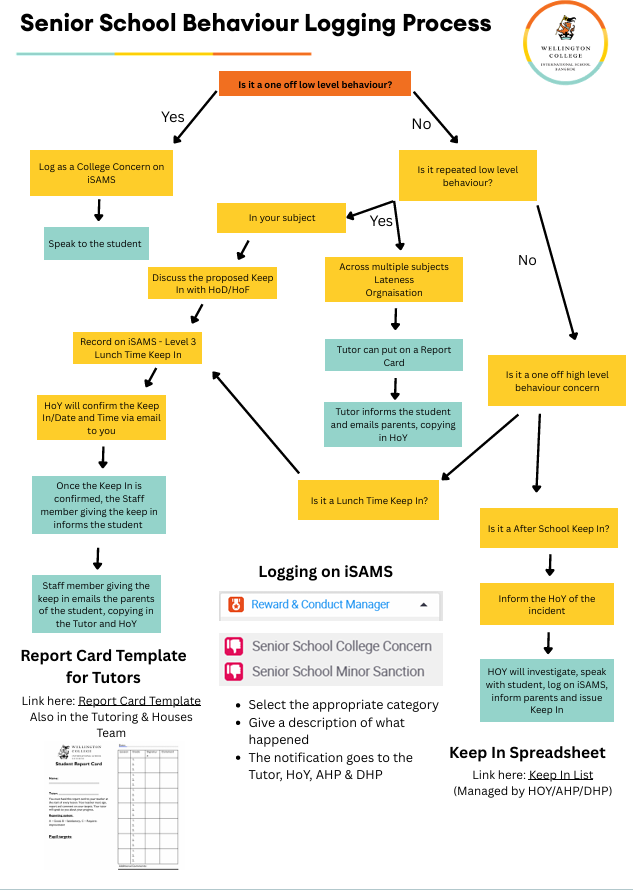

Senior School guidance
Senior School Behaviour and Sanctions
Follow the school decision process below when logging behaviour and selecting the appropriate response. The levels table preserves the policy wording for sanctions, communication and responsibility.
1 · Behaviour logging process

2 · Behaviour levels and sanctions
| Level | Example behaviour | Example consequence | Communication home | Who |
|---|---|---|---|---|
| 1 College Concern |
|
Verbal discussion with staff member. | None. | All staff. |
| 2 Repeated Behaviours | Repeated College Concerns, for example:
|
Report Card. | Email to parents. | House Tutor, with sign off from HoY. |
| 3 Level 3 |
|
Lunchtime Keep In, 30 minutes. | Email to parents from the teacher giving the Keep In. Parents invited in for a meeting as required. |
Staff member giving the Keep In, with sign off from HoY. |
| 4 Level 4 |
|
After School Keep In, 1 hour. | Email to parents. Parents invited in for a meeting as required. |
Head of Year / Assistant Head. |
| 5 Level 5 |
|
Internal Rustication, exclusion. | Parent meeting to include Deputy Head. | Deputy Head / Head. |
| 6 Level 6 |
|
External Rustication, exclusion. | Parent meeting with Head of School and/or Master. | Head / The Master. |
Important guidance
This table offers guidance to support consistent responses. Each situation may require a different approach depending on context and individual circumstances. Staff should use professional judgement to ensure fair and appropriate outcomes.